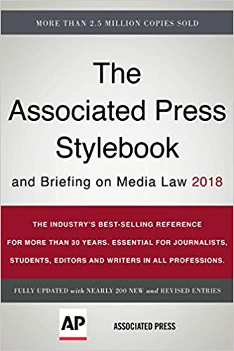

Visual Media
Dale Jenkins
Tuesday and Thursday from 2:00-3:15 p.m.
Education
-M.Div. The Southern Baptist Theological Seminary
-B.A. University of North Carolina at Chapel Hill
What he did before teaching
Before becoming a professor Dr. Jenkins worked as a reporter and photographer for the Taylorsville Times. He was able to get first hand experience on writing in the media and how it all works. He loves to tell his stories about his reporter times. He says that his favorite thing about working as a reporter because the rush of getting the news stories out first was so thrilling.
Description
Writing and information gathering skills including news, features, press releases, and advertising copy for broadcast, print and public relations media.
Opinion
The first day in this class Dr. Jenkins warned us that this class was going to be a very hard class. He had a smile on his face when he told us that he will take points off for every mistake we make, he was not lying. While his class is really hard I have learned so much in his class and feel that I've become a better writer because of him.
Expected Grade
I hope to get a B in this class. He lets us rewrite our worst paper and I'm hoping that will bring my grade up to a B.